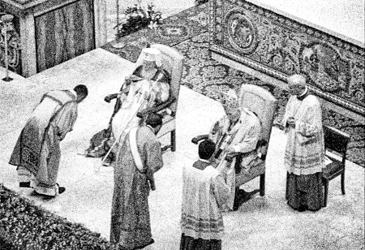
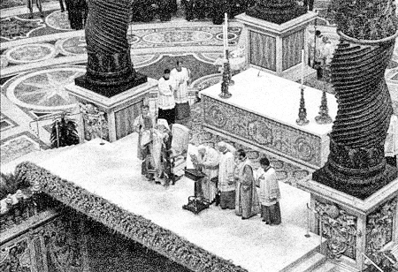
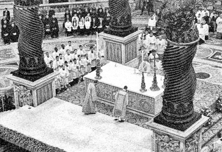

„Am căzut de acord ca, atunci când suntem noi în teritoriul oriental ortodox, zicem Credeul fără adaosul que (adică fără filioque — n.n.). Și când suntem în teritoriul romano, unei Biserici catolice, spunem cu (acest adaos — n.n).”



Unul dintre cele mai șocante interviuri cu fostul patriarh al Bisericii Ortodoxe Române a fost realizat de Doru Braia. Iată câteva fragmente:
„Doru Braia: Pe mine m-a impresionat, aici în România, la Timișoara, unde am găsit un ecumenism desăvârșit. Probabil sunteți informat că, acolo, periodic, au loc întâlniri de rugăciune între absolut toate cultele.
PF Teoctist: Sigur.
Doru Braia: Până și cultul mozaic, care și-a prezentat așa o deschidere pentru o asemenea inițiativă, și-am spus și eu, de multe ori, iată Timișoara este din nou, de data asta un antemergător european, poate deveni un exemplu pentru întreaga Europă.
PF Teoctist: Aveți dreptate.
Doru Braia: Nu numai izbucnirea revoluției acum 17 ani.
PF Teoctist: Acum s-a generalizat, pentru că avem Săptămâna de rugăciune în luna ianuarie, când și aici, la București, și în toată țara, se fac rugăciuni împreună, cu participarea tuturor, la bisericile tuturor. Şi câte biserici sunt, atâtea seri de rugăciune facem, cu rezultate foarte frumoase, care întrețin relațiile noastre de prețuire și de rezolvare a unor probleme care vor fi totdeauna, se vor ivi între noi, dar se rezolvă atunci când este gândul îndreptat spre țelul suprem al cuvântului Mântuitorului Iisus Hristos de unitate între noi.
În 1984… am participat în cadrul conferinței Bisericilor Europene, la Riva del Garda, în nordul Italiei, la o ședință foarte importantă a Conferinței Bisericilor Europene, împreună cu Conferințele Romano-Catolice europene. Deci - autoritatea creștină întreagă. Şi s-a discutat acolo și s-a definitivat o dorință și o discuție care de mult timp… Problema lui Filioque, a unui cuvânt numai…
Doru Braia: E o dezbatere de o mie de ani.
PF Teoctist: … care era atât de controversat, și de-o parte, și chiar piedică, piedică la rugăciune și la întâlnire. Ei, acolo, ca prin minune, toți am fost de acord, toată adunarea am fost de acord, în urma, bineînțeles, unor comisii de teologi care au aprofundat că acest cuvânt, și așa, și așa, conține același adevăr.
Doru Braia: Păi, Sfântul Papă Ioan Paul al II-lea, când lucra, lucra temeinic.
PF Teoctist: Sigur, sigur.
Doru Braia: … toate comisiile erau bine așezate.
PF Teoctist: Am căzut de acord ca, atunci când suntem noi în teritoriul oriental ortodox, zicem Credeul fără adaosul que (adică fără filioque – n.n.) Şi, când suntem în teritoriul romano, unei Biserici catolice, spunem cu (acest adaos – n.n.). (din emisiunea Talk Şoc, realizată de Doru Braia, difuzată la postul N 24 pe 4 ianuarie 2007. E important de menționat că în varianta postată pe site-ul ecumenist habitus, pe http://habitusnetwork.org/video-clips/interview-with-romanian-orthodox-patriarch.html sunt cenzurate exact secundele în care patriarhul afirmă că în Apus „spunem” crezul cu Filioque. Dar, din greșeală cenzorii au postat traducerea pasajului respectiv exact înainte de a cenzura filmul.)
Este pur și simplu apostazie să afirmi că „și așa, și așa”, adică și cu Filioque, și fără, Crezul conține același adevăr. Este o rătăcire și mai mare să înveți oamenii că în Apus ortodocșii spun Crezul cu Filioque, erezie dată anatemei în Sinodul de la Constantinopol din 879-880, sub Sfântul Patriarh Fotie cel Mare.
La Sibiu, în 2007, la Cea de-a treia Adunare Ecumenică Europeană, Mitropolitul Daniel (pe atunci locum tenens al patriarhului Bisericii Ortodoxe Române), a făcut referire la acea adunare ecumenică din Riva del Garda, de care amintea patriarhul Teoctist: „Biserica Ortodoxă Română, ca Biserică majoritară din România, a participat, din primele zile ale Conferinței Bisericilor Europene, în dialogul cu alte Biserici Creștine de pe continent, un dialog care a crescut prin colaborarea cu Consiliul Conferințelor Episcopale Europene. În acest sens, poporul român a avut bucuria să îl audă pe Episcopul Romei spunând în București, în mai 1999, Simbolul credinței în limba română, în timp ce, trei ani mai târziu, în Basilica Sfântul Petru, părintele nostru de binecuvântată pomenire, Teoctist, patriarhul României, și prietenul său, Papa Ioan Paul al II-lea, au rostit împreună Crezul niceo-constantinopolitan (din 381), pentru a da mărturia unei comori comune a credinței creștine. În aceste momente, pomenim cu multă bucurie o altă adunare europeană ecumenică, care a avut loc în octombrie 1984, în Riva del Garda, în Italia, unde ortodocșii, catolicii și protestanții, dintr-o Europă încă divizată de zidul Berlinului, au rostit împreună, în Domul din Trento, același Crez niceo-constantinopolitan, ca o mărturie vie a rădăcinii comune a credinței creștine.” (www.eea3.org/documenti/fourth/DanielEn.pdf)
Mărturia arată unde duce rătăcirea ecumenistă: ortodocși, catolici și protestanți au rostit împreună: „Cred într-una Sfântă, sobornicească și apostolească Biserică”. Care este această Biserică supra-confesională? Este ea Biserica – Trupul lui Hristos? Nu, ci este monstrul care vrea să se substituie Bisericii lui Hristos. Rostirea Crezului împreună arată identitatea de credință. Ortodocșii care la Riva del Garda au rostit Crezul împreună cu patriarhul Teoctist, dar și cu catolicii și cu protestanții, s-au lepădat de Hristos, călcând în picioare Tradiția Sfinților Părinți.
Cât privește rostirea Crezului de către patriarh împreună cu papa, în 2002, momentul a avut loc în cadrul missei papale. Momentul a fost menționat chiar de către fostul patriarh: „Vă putem spune despre bucuria, prețuirea și înțelegerea pe care le-am întâlnit la Vatican, la cardinalii, la episcopii și preoții romano-catolici și la credincioșii pe care i-am întâlnit. Am auzit cum numele Bisericii Ortodoxe Române, al României și al poporului român au fost scandate minute în șir, atât la primirea din Piața Sf. Petru, cât și la Missa pe care a săvârșit-o Papa cu clerul său în Catedrala istorică, înălțată pe mormântul Sf. Apostol Petru, la care am asistat cu delegația noastră. S-a citit Sf. Evanghelie și Apostolul în limbile: italiană și română, s-au rostit cuvântările protocolare, am spus împreună Crezul ortodox niceo-constantinopolitan în limba română” (Teoctist, Patriarhul Bisericii Ortodoxe Române, din volumul Pe treptele slujirii creștine, vol. XIII, Editura Institutului Biblic și de Misiune al Bisericii Ortodoxe Române, București, 2003, p. 392)
Lăsând la o parte entuziasmul de moment, rostirea Crezului la o liturghie catolică presupune identitatea de credință cu săvârșitorul liturghiei respective. În cadrul Sfintei Liturghii, poporul mărturisește Crezul pentru a arăta că ține credința cea adevărată, aceeași credință pe care o are și săvârșitorul liturghiei. Deși patriarhul Teoctist a rostit Crezul corect, fără Filioque, a mărturisit că el crede în aceeași Biserică în care crede și papa, și toți clericii catolici și toți credincioșii catolici care erau de față.
Este important de precizat că în presa românească momentul a trecut aproape neobservat. Nici revistele bisericești, nici site-uri-le ortodoxe nu au luat poziție față de acest gest apostat. Deși pe site-urile catolice momentul fusese anunțat cu câteva zile mai devreme. Pe http://www.catholica.ro/stiri/show.asp?id=4384 se putea citi: „Dialogul dintre Biserica Catolică și Biserica Ortodoxă va cunoaște un nou impuls în săptămâna următoare prin vizita, între 7 și 13 octombrie, a Patriarhului Bisericii Ortodoxe Române, Preafericitul Teoctist, la Sfântul Părinte. (…) Sâmbătă, 12 octombrie, pentru dimineață este prevăzută o întâlnire între Sfântul Părinte și Patriarh, când vor ține amândoi discursuri și-și vor face cadouri reciproc, după care vor semna împreună o declarație comună. În seara aceleiași zile, va avea loc o celebrare ecumenică în Biserica Sf. Bartolomeu, prezidată de Patriarh, de Cardinalul Walter Kasper, Președintele Consiliului Pontifical pentru Promovarea Unității Creștinilor, de Cardinalul Ruini și de Cardinalul Francis Eugene George, Arhiepiscop de Chicago, care este titularul acestei biserici. Vizita se va încheia cu celebrarea solemnă, la 13 octombrie, a unei Liturghii în a XXVIII-a duminică de peste an, prezidată de Papa Ioan Paul al II-lea în prezența Preafericitului Teoctist și a delegației sale în bazilica din Vatican. Papa și Patriarhul vor celebra împreună Liturghia Cuvântului, se vor ruga împreună, vor face împreună mărturisirea de credință în limba română și se vor separa în momentul Liturghiei Euharistice.”
Există foarte puține mărturii directe despre slujba respectivă. Una din ele poate fi citită pe http://miruna7.blogspot.com/2007/07/n-acea-zi-de-octombrie-cnd-am-rostit.html: „Pe 13 octombrie, eram la Vatican, în Bazilica Sfântul Petru, să asist la Liturghia duminicală comună, catolică și ortodoxă. Prea Fericitul Teoctist și Papa Ioan Paul al doilea au slujit împreună, în fața miilor de credincioși. Ascultam Sfânta Evanghelie în Vatican, în limba română! Patriarhul nostru a ținut predica, amintind o epistolă a Sf. Apostol Pavel. «Am citit Evanghelia respirând cu doi plămâni», a spus Papa Ioan Paul al doilea adăugând apoi, în românește: «Dumnezeu să binecuvânteze România». Apoi s-a spus Crezul, alternativ și în limba română, de PF Teoctist. Toți românii prezenți la Vatican eram emoționați și rosteam și noi împreună cu Patriarhul, mărturisirea credinței. În acele momente, pe planul spiritual al credinței, comuniunea noastră ca frați creștini, ortodocși și catolici, a fost deplină.”
În aceeași zi, patriarhul și papa Ioan au semnat o declarație prin care afirmau dorința de a ajunge la unirea Bisericilor și a creștinilor: „Întâlnirea de astăzi reînnoiește angajamentul nostru de a ne ruga și a lucra pentru a ajunge la unitatea vizibilă deplină a tuturor ucenicilor lui Hristos. Scopul și dorința noastră arzătoare o constituie comuniunea deplină în care nu este absorbire, ci comuniune în adevăr și în dragoste. Această cale este una ireversibilă, pentru care nu există alternativă: este calea Bisericii. (…)
Relațiile noastre trebuie să fie oglinda comuniunii adevărate și profunde în Hristos, comuniune care, fără să fie deplină, există deja între noi. Recunoaștem, de fapt, cu bucurie, că avem împreună Tradiția Bisericii nedespărțite, centrată pe Taina Euharistiei, despre care dau mărturie sfinții pe care noi îi avem în comun în calendarele noastre. (…)
Biserica Ortodoxă Română – centru de întâlnire și de schimburi între tradițiile bogate slave și bizantine ale Răsăritului – și Biserica Romei, care, în componenta sa latină, exprimă vocea occidentală a unicei Biserici a lui Hristos, trebuie să contribuie împreună la o misiune care caracterizează cel de-al treilea mileniu. După expresia tradițională și așa de frumoasă, Bisericilor locale le place să se numească Biserici surori. Deschiderea spre această dimensiune înseamnă a colabora pentru a reda Europei etosul său cel mai profund și chipul său autentic uman.” (Din Declarația comună a Sanctității Sale Papa Ioan Paul al II-lea și a Prea Fericirii Sale Părintele Patriarh Teoctist, Vatican, 12, octombrie 2002, tipărită în volumul Pe treptele…, pp. 110-113).
Ulterior, patriarhul Teoctist a recunoscut ca bază a vizitei sale la Vatican învățătura eretică despre Bisericile surori: „Documentul de la Balamand (Liban, 1993), consacră un vocabular ecumenic nou, care învederează o îndelung așteptată schimbare de înțelegere și de atitudine. Biserica Catolică și Biserica Ortodoxă – se spune în document – se recunosc reciproc în calitate de Biserici surori (art. 14). Pe această bază a fost posibilă intensificarea relațiilor Bisericii Ortodoxe Române cu Biserica Romano-Catolică, care au culminat cu vizita Sanctității Sale Papa Ioan Paul al II-lea în România, în mai 1999 și a noastră la Vatican, în octombrie 2002” (p. 170).
Considerând că și Bisericile eretice fac parte din Biserica lui Hristos, patriarhul Teoctist a făcut în repetate rânduri rugăciuni cu ereticii: „Încheiem, în seara aceasta, Săptămâna de Rugăciune pentru Unitatea Creștină, Săptămâna Paștelui nostru comun, cum am putea să o numim, pentru că slujba pe care am ascultat-o acum se săvârșește în prima zi a Sfintelor Paști (…) Slujba aceasta este pilduitoare pentru misiunea noastră și se potrivește cu încheierea Săptămânii de Rugăciune, care înseamnă Paștele nostru ecumenic, cum spuneam, adică nădejdea noastră în apropierea și în găsirea drumului spre unitatea creștină, ca dorință, preocupare și îndatorire supremă a fiecărui creștin, pe care trebuie să o aibă în vedere toate Bisericile creștine din vremea noastră.
Rugăciunea noastră comună este un dar scump, dumnezeiesc, însă și un rod al ecumenismului, iar însemnătatea ei crește când lumea se află în criză, ca acum, desigur o criză trecătoare.” (Cuvânt rostit cu ocazia încheierii Săptămânii de Rugăciune pentru Unitatea Creștină, Catedrala Patriarhală din București - 25 ianuarie 2003, Pe treptele…,, p. 501).
La dineul oferit de Eminența Sa, Cardinalul Kasper Walter, Președintele Consiliului Pontifical pentru Promovarea Unității Creștine, Roma: „Calea este El, Fiul lui Dumnezeu, El Care a întemeiat o singură Biserică, trup tainic al Său, El Care S-a rugat stăruitor ca noi să fim una (Ioan 17, 21). Iată, așadar, ceea ce ne dorim atât de mult aici, în Casa Sfintei Martha. Cred că sunt în asentimentul tuturor și nu greșesc afirmând că toți împărtășim această dorință plină de optimism, că prin prezența noastră aici facem împreună noi pași însemnați pe calea spre unitatea deplină” (Pe treptele…, p. 66).
Iar în Cuvântul rostit la deschiderea Săptămânii de Rugăciune pentru Unitatea Creștină – Catedrala Romano-Catolică Sf. Iosif din București, 18 ianuarie 2003, patriarhul Teoctist a declarat: „În călătoria noastră spre Emaus, Bisericile noastre creștine, pe care noi le reprezentăm în această seară aici, în Catedrala romano-catolică Sf. Iosif, prin bunăvoința Înalt Prea Sfințitului Ioan Robu, Arhiepiscop și Mitropolit de București, preocupate de promovarea valorilor evanghelice, aflate în centru credinței noastre creștine, cheamă numele lui Dumnezeu, Cel în Treime lăudat și slăvit, și se roagă Lui pentru unitatea Bisericilor Mântuitorului Iisus Hristos. Cu acest gând de unitate ne întâlnim în rugăciune și ne bucurăm că împreună cu noi, la o adunare ca aceasta, se află Iisus cel înviat, cum El însuși ne încredințează: „Unde sunt doi sau trei adunați în numele Meu, acolo sunt și Eu în mijlocul lor” (Matei, 18, 20) (…)
De la El noi avem unitatea și trebuie să o împlinim după dorința Lui și să o trăim ca atare. Prin urmare, în Biserica despărțită a Mântuitorului Iisus Hristos noi trebuie să vedem vasul de lut care, deși purtător al unei comori atât de prețioase, cum este unitatea, nu reușește întotdeauna și în măsură suficientă, din pricina dezbinării, să arate în Trupul ei pe Hristos în fața lumii de astăzi, care are mai mult ca oricând nevoie de această mărturie. (…)
Am auzit cu toții în seara aceasta imnuri și cântări atât de frumoase, am ascultat cuvinte de evlavie, de nădejde și de îmbărbătare, am înălțat într-un cuget rugăciuni care să ne ducă neîncetat spre această lumină a «cunoașterii voii lui Dumnezeu» (Col. 1, 9), ca împreună cu Bisericile noastre să ne aflăm în fața lui Iisus, să ne învrednicim, precum Luca și Cleopa, să-L vedem stând cu noi la frângerea pâinii.” (Pe treptele…, pp. 495-496).
Se mai pot da multe citate legate de apostazia patriarhului Teoctist. Ar fi de ajuns menționarea documentelor semnate cu monofiziții, prin care se afirma că Biserica Ortodoxă Română are același crez cu pseudo-bisericile anticalcedoneene (în revista Axa au apărut deja mai multe articole pe această temă). Ba chiar patriarhul a putut declara că Ortodoxia românească sprijină chiar și rătăcirea evanghelică: „Ortodoxia nu este o piedică pentru cultură, mai ales Ortodoxia românească, care a sprijinit ca în România să înflorească și cultul armean și Biserica evanghelică, precum și alte culte, cu care noi ne-am aflat și în trecut, dar ne aflăm și acum, într-o frățească colaborare.” (Pe treptele…, p. 158).
Care este rostul acestui articol? Acela de a trage un semnal de alarmă asupra faptului că se păstrează o tăcere vinovată asupra implicării ierarhilor Bisericii Ortodoxe Române în mișcarea ecumenistă. Patriarhul Teoctist a slujit cu papa Ioan Paul al II-ea, chiar dacă doar prima parte a Liturghiei catolice. Chiar și dacă patriarhul nu ar fi spus Crezul, prin faptul că s-a rugat cu ereticii catolici, că a intrat sub anatema canonului 45 apostolic: „Episcopul sau presbiterul, sau diaconul, dacă numai s‑a rugat împreună cu ereticii, să se afurisească: iar dacă le‑a permis acestora să săvârșească ceva ca clerici (să săvârșească cele sfinte), să se caterisească”.
Iar prin faptul că a dat binecuvântare în timpul slujbei diaconului catolic (în timp ce diaconul ortodox era binecuvântat de către papă ) patriarhul Teoctist a arătat că nu înțelege diferența dintre clerul adevărat și clerul eretic.
Sunt multe de spus despre personalitatea patriarhului Teoctist. O întrebare vine de la sine: a fost sau nu ortodox? Unii au invocat faptul că poate s-a pocăit pentru apostazia sa. Dar, după cum învață Sfinții Părinți, pentru sminteală publică e nevoie de pocăință publică. Iar patriarhul Teoctist nu a făcut așa ceva. Ci, chiar înainte de a muri, a spus în interviul menționat la începutul acestui articol cum că ortodocșii și catolicii au același Crez, că și cu și fără Filioque învățătura este aceeași. Altfel spus, patriarhul Teoctist a murit sub anatema dată de Sinodul de la Constantinopol, din anii 879-880…